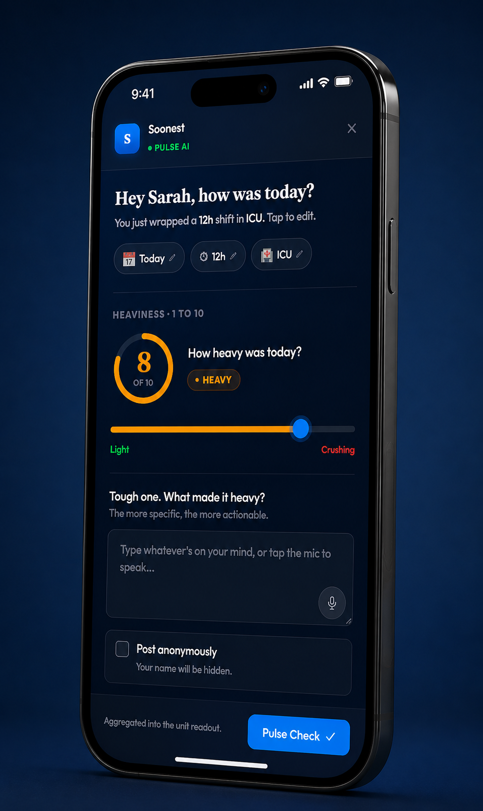
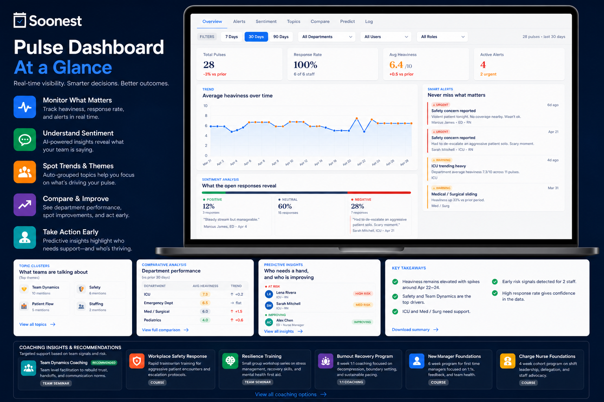

A 30-second end-of-shift check-in surfaces burnout signals, safety flags, and at-risk staff — so you can act before it becomes a retention crisis.
At the end of every shift, staff get a simple prompt. No lengthy surveys. No HR forms. Just a quick pulse that tells you what's actually happening across your organization.
Staff rate shift intensity on a 1–10 scale. Voice or text response — their choice. Takes under 30 seconds and fits into the natural post-shift routine.
An optional follow-up lets staff share what made the shift heavy. Posts anonymously if preferred. This is where the real signal comes from — patient complexity, team friction, safety incidents, emotional weight.
Pulse AI runs sentiment analysis, clusters themes, flags safety concerns, and builds a real-time picture of wellbeing across your groups, teams, and individuals. You see it all in one dashboard.

Pulse AI aggregates check-in data into a live admin dashboard. See trending scores by department, team, and individual. Spot dips before they become crises. Act with specificity instead of guessing.

Pulse AI doesn't just collect data — it tells you what it means. Every layer of your organization is visible, and the AI connects the dots between check-in patterns and real outcomes.
See how your entire organization is tracking. Identify which departments are under strain and which are thriving. Spot cross-org trends before they compound.
Drill into specific teams and departments. Are certain shift types or locations driving heavier scores? Surface team dynamics, recurring friction points, and early warning patterns.
Predictive scoring identifies providers most at risk of burnout or disengagement. See who needs attention before they reach the breaking point — or before they start quietly looking for another job.
AI topic clustering identifies what themes are emerging in staff responses — patient complexity, team conflict, workload spikes, safety concerns. Anonymized, aggregated, and continuously updated.
Pulse AI doesn't wait for you to go looking. It sends proactive alerts when something needs your attention — so you can intervene early instead of managing a crisis.
The data is only as valuable as what you do with it. When Pulse AI identifies at-risk individuals or struggling teams, it connects directly to Soonest's coaching programs — recommending the right intervention based on your actual signals.
When Pulse AI flags a provider or team, it surfaces a recommended coaching program based on the specific signals — burnout recovery, resilience training, team dynamics facilitation, workplace safety, or leadership development. No guesswork. No generic responses. The right support, matched to what your data actually shows.
Request a demo and we'll walk you through how Pulse AI works with your team's actual shift patterns — and show you what the dashboard looks like with real data behind it.